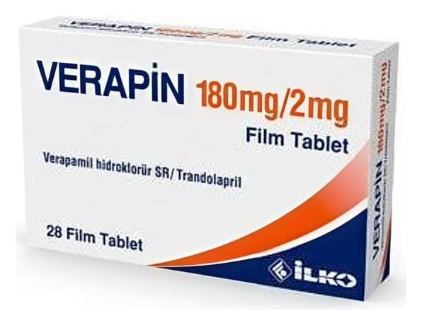

Verapin 180 mg/2 mg Film Kaplı Tablet, 28 Adet

Ne için kullanılır
KT · Bölüm 1* VERAPİN film tablet, modifiye salım (uzatılmış, yavaş salımlı) formülasyonuyla hazırlanmış pembe renkli, oval film kaplı tabletler şeklindedir.
VERAPİN film tablet, 28 tablet içeren blister ambalajlarda piyasaya sunulmaktadır.
* VERAPİN iki değişik türden etkin madde içeren bir kombinasyon ilacıdır; verapamil, kalsiyum kanal blokörleri adı verilen bir ilaç grubunun üyesidir; trandolapril ise anjiyotensin dönüştürücü enzim (ADE) inhibitörleri (baskılayıcıları) denilen bir ilaç grubuna aittir.
Kalsiyum kanal blokörleri, kalbiniz ve kan damarlarınızdaki kas hücrelerinin içine giren kalsiyum miktarını değiştirirler. Bunun sonucunda kalp atışlarınızın kuvveti ve hızı değişir. Aynı zamanda kan damarlarınızın duvarlarındaki kaslar da gevşer. Böylelikle kan basıncınızın azalmasına yardımcı olur ve kanın vücudunuza daha kolay pompalanmasını sağlarlar.
ADE inhibitörleri ise başka bir mekanizma ile kan damarlarınızın duvarlarındaki kasları gevşeterek etki gösterirler ve kan basıncınızın azalmasına yardımcı olurlar.
* VERAPİN hipertansiyon (yüksek kan basıncı, yüksek tansiyon) tedavisinde kullanılmak içindir. Tek ilaç ile yapılan tedavinin yeterli olmadığı durumlarda, iki etkin maddeli kombinasyon tedavisi olarak kullanılır.
e Yüksek kan basıncı (hipertansiyon) süreğen (kronik) bir hastalıktır ve kalp, böbrekler, beyin ve gözler gibi çeşitli organlarda zaman içerisinde harabiyete yol açabilir. Hipertansiyon, VERAPİN gibi ilaçlar ile kontrol altına alınabilir. Doktorunuz ilaç tedavisine yardımcı olmak üzere, size bazı yaşam tarzı değişiklikleri de önermiş olabilir.